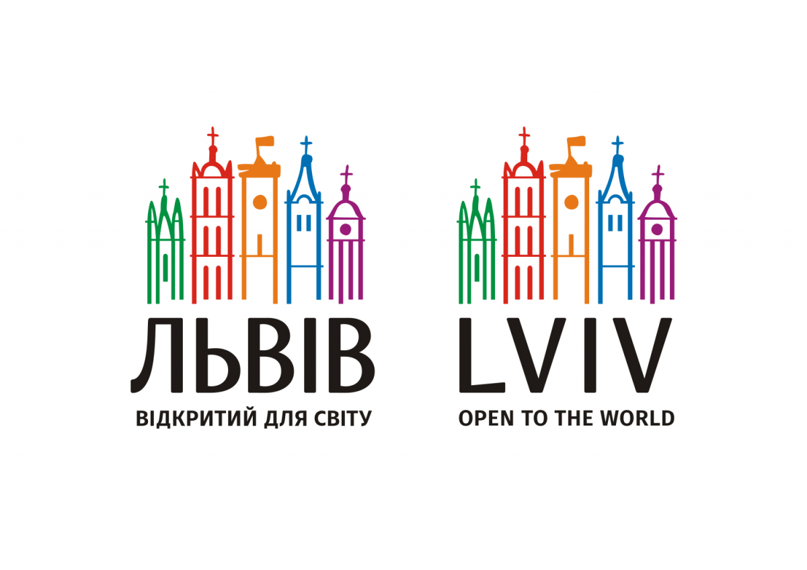

Лабораторна робота №2
Створення простої сторінки
Львів за один день: маршрут, місця, які варто відвідати

Музеї
- Арсенал
- Будинок Стрілецького товариства
Кафе та ресторани
- Berlin Lemberg
- Kredens cafe
- Кантона
Театри
- Драматичний театр ім. Марії Заньковецької
- Театр ім. Леся Курбаса